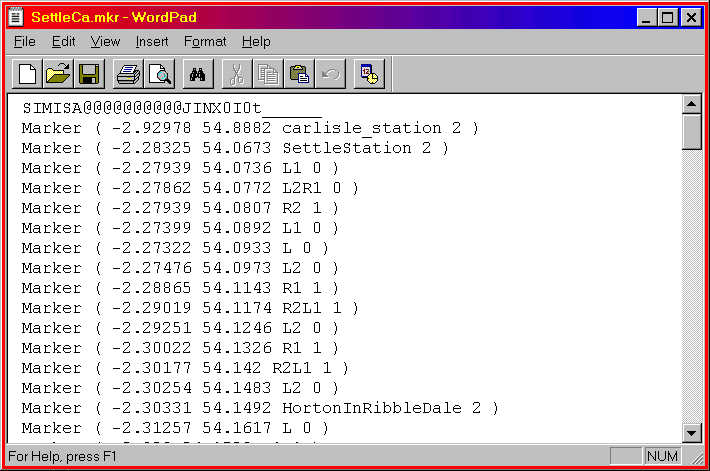

Creating Marker Files
by Yuri Sos
Overview
Markers are used to pinpoint landmarks or track when building a route in Route Editor. The file is named myroute.mkr (where myroute is the filename of the route (ie the same name as the .REF file) and is, as are most of the files in MSTS, a Unicode text document which must be opened and edited in Wordpad.
Tip: I've found it difficult to write marker files from scratch, so I usually copy a .mkr file from a default route, say SettleCa.mkr from Europe1, delete all the markers in the file than add my own. Your marker file will look like this (this is the first part of the SettleCa.mkr file:
